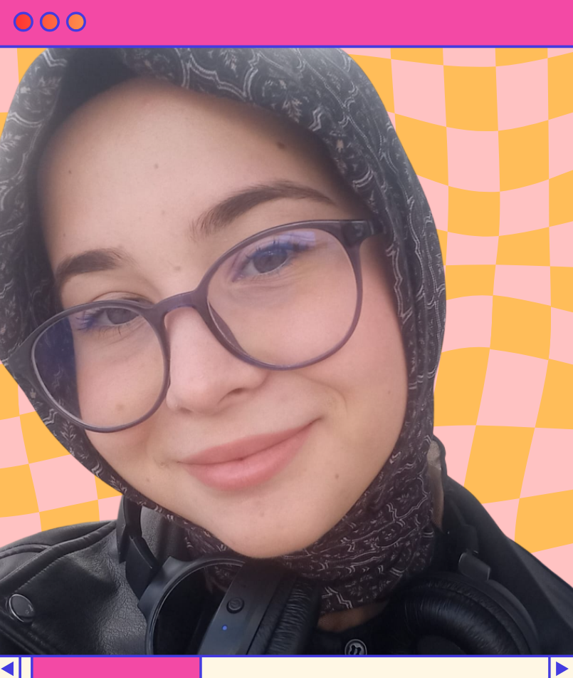

Solving problems is not a necessity for me, but an enjoyable discovery process. Currently, I focus on developing projects in the field of artificial intelligence and working on systems that can understand data and make smart decisions. I enjoy analytical thinking and I try to produce effective solutions by breaking complex problems into simpler parts.

C,Java,C#,C++,Python
HTML,CSS,JavaScript
Numpy, Pandas, Tensorflow
Kali Linux, Wireshark, Network Security, CTF
Git, Linux, Jupyter Notebook, Unity, Hyper-V
Hello, I'm Sevde. I am a third-year Computer Engineering student. My curiosity about technology and my desire to learn always motivate me to discover new things and improve myself. At the beginning of my education, I was interested in cybersecurity and focused on understanding how systems work and the logic behind them. Now, I am improving myself by developing projects in the field of artificial intelligence and trying to better understand how data-driven systems work. I enjoy analytical thinking and problem solving. I focus on producing effective solutions by breaking complex problems into smaller parts. I continue to improve my technical skills and develop new projects by working with different programming languages. With my curiosity for learning and desire to improve, I aim to continuously develop myself in artificial intelligence and data science, gain experience by creating real projects, and take an active role in the software world by contributing to open-source projects.
İzmir Çimentaş Anatolian High School
Kütahya Dumlupınar University
Bachelor's Degree in Computer Engineering | 3rd Year Student
This project is my personal portfolio website where I present my work and technical skills in software development. It was designed and developed from scratch using HTML and CSS in Visual Studio Code. The interface follows modern web design principles and uses a responsive design to work well on different screen sizes. I focused on creating a clear and organized user experience. The project is still in development, and interactive features are being added using JavaScript.
NeuroDiet is a lifestyle tracking system developed as a team project to help users analyze their daily habits. The system allows users to record and track data such as water intake, meals, exercise, sleep patterns, and mood. The project was developed using Python in the Visual Studio Code environment. User data is stored in an MSSQL database, and the system uses an API-based structure for data communication. During the development process, Git and GitHub were used for teamwork and version control. In the future, the system aims to analyze user data and provide AI-based feedback.
In this project, an extended version of the classic 2048 puzzle game was developed with different board sizes. The game was created using the Unity game engine and C#. To allow different difficulty levels, 3×3, 4×4, and 5×5 board options were designed. The project includes core game mechanics such as the tile merging algorithm and a score system. A modular structure was used to support different game levels.